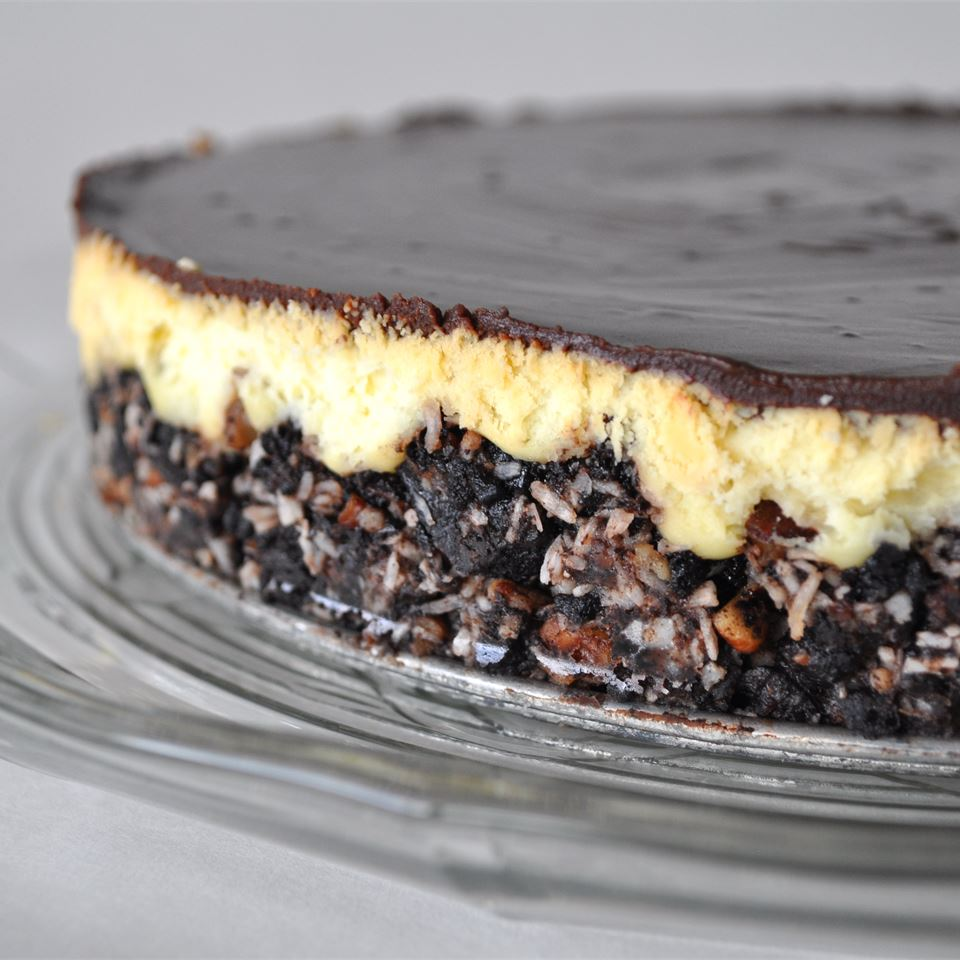

Canada Day Nanaimo Bar Cheesecake

Description
The taste of a Nanaimo bar in a cheesecake! Can't get any better than this. Make in the jelly roll pan for serving a larger crowd.
Result is thinner but still as tasty. (You will need to adjust baking time if you use the bigger pan.)
Ingredients
- 2 1/2 cups crushed chocolate cream-filled sandwich cookies
- 1 cup white sugar
- 4 eggs
- 1/2 cup heavy cream
- 6 (1 Oz) squares semisweet chocolate
Steps
- Preheat the oven to 175 degrees C
- Stir together cookie crumbs, melted butter, pecans, and coconut in a bowl until the mixture is well combined.
Press into the bottom of a 9x13-inch baking dish, and refrigerate while making filling.
- Beat cream cheese, sugar, and custard powder in a large bowl with an electric mixer until light and fluffy, and beat in eggs,
1 at a time, beating each until fully incorporated before adding the next. Layer the filling over the crust.